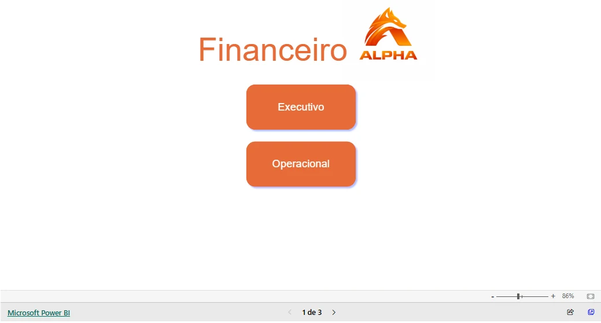

Modelagem Dimensional · BI
Gestão Financeira
Integridade financeira, da planilha ao modelo dimensional
01 / Contexto
O cenário e o escopo
Projeto de ETL e BI financeiro para centralizar receitas, custos, orçamento, contas a receber e metas. A versão pública profissionalizada usa um contrato demonstrativo e dados inteiramente fictícios.
02 / Problema e objetivo
O que precisava ser resolvido
Dados financeiros precisam manter granularidade e identidade dos lançamentos ao longo do reprocessamento. Escolher uma linha arbitrária ou usar valores mutáveis como chave pode ocultar ou duplicar registros.
03 / Arquitetura e desenvolvimento
Da fonte à entrega
- 01Excel · 5 abas
- 02Contrato + Decimal
- 03Staging → DW
- 04Reconciliação + views
Fluxo resumido para leitura. A documentação do repositório detalha contratos, fontes, etapas e reprodução.


04 / Desafios e decisões
Escolhas que sustentam a solução
- IDs textuais e estáveis identificam lançamentos e títulos.
- Valores financeiros usam Decimal/NUMERIC e validação estrita.
- Staging, dimensões, fatos e ledger são publicados em uma transação.
- DDL versionado, UPSERT e reconciliação conferem contagens e totais.
05 / Resultados e evidências
O que é possível verificar
A demonstração permite avaliar carga, correções, repetição e rollback com PostgreSQL real. Os resultados sintéticos verificam integridade técnica, sem representar cifras, performance ou homologação de uma empresa.
Evidência pública
DDL, contratos, gerador de Excel e documentação de 55 testes, dos quais 25 com PostgreSQL. CI da main consultado com sucesso em 21/10/2026.
Evidências consultadas em 21/10/2026. Os testes do projeto não foram reexecutados durante a implementação deste site.
Vamos conversar
Um próximo desafio
com dados e negócio
Busco oportunidades como Analista de Dados, Analista de BI ou Cientista de Dados, além de funções híbridas entre essas áreas.